アフリカの人口の横棒グラフ
アフリカの人口の横棒グラフ
サマリー
このチュートリアルでは、アフリカの2010年の人口と2050年時の推定人口の分布を対比するグラフを作成します。
- 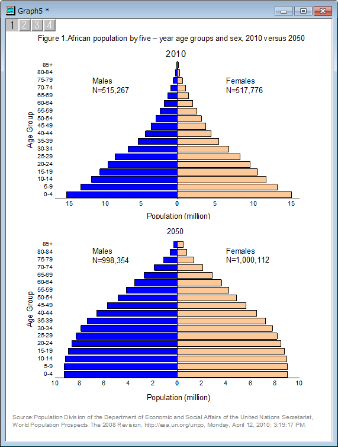
必要なOriginのバージョン: Origin 2015 SR0以降
学習する項目
このチュートリアルでは、以下の項目について解説します:
- 他の列のデータを使用してグラフを複製する
- 軸スケールを逆横棒チャートに設定する
- グラフを統合する
ステップ
このグラフを作図するには、4つの異なる横棒グラフを作図し、それを編集してから統合してひとつのグラフにまとめます。
横棒グラフをバッチ作図で作成する
- Originのワークブックに何もない状態で操作を始めます。Originの<Origin EXEフォルダ>\Samples\Graphingの中にあるデータファイルAfrican_Population.dat をインポートします。（もしOriginと共にインストールしたサンプルの中に見つからなかった場合、ftpからZIP形式のデータをダウンロードしてください。）
- 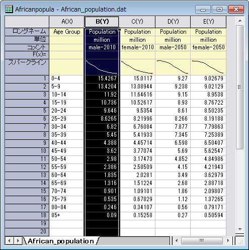
- 列Bを選択し、作図：基本の2Dグラフ：棒グラフと選択して棒グラフを作成します。データプロットをクリックし、スタイルツールバーの オブジェクトの塗り色
 を使用して塗りつぶしの色を赤に変更します。
を使用して塗りつぶしの色を赤に変更します。
- それでは、同じようなグラフを他の3つの列から複製しましょう。グラフのタイトルバーを右クリックし、コンテキストメニューから複製(バッチ作図)を選択します。
- 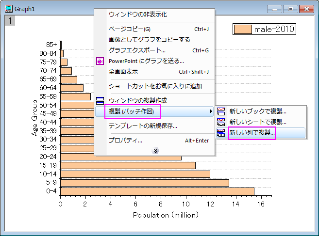
- 開いたダイアログにて次をバッチ作図 のドロップダウンリストから列 を選択し、Ctrl キーを押しながら C, D, E 列を選択してOKをクリックします。
- 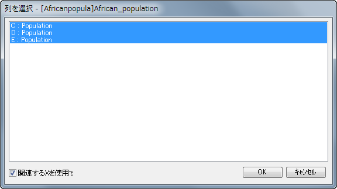
- 同じようなグラフが3つ作成されます（もし、全てのデータを見えるように再スケールしますか？という内容の確認メッセージが表示されたら、はいを選んでOKをクリックします）。
- これで、4つのグループに対する4つの横棒グラフ、male-2010, female-2010, male-2050, female-2050ができます。
- 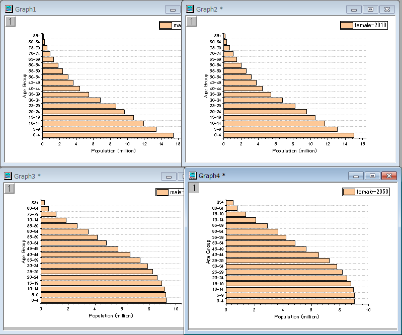
横棒グラフを編集する
4つの横棒グラフをそれぞれ編集します。
- 最初にGraph1(凡例にmale-2010と記載されているグラフ)を編集します。
- データプロットをダブルクリックして、作図の詳細ダイアログボックスを開きます。左側のパネルにあるLayer1 の三角形を選択してその中のサブノードを選択し、右側パネルにあるパターンタブの塗りつぶしを青に変えます。OK をクリックして塗り色を適用し、ダイアログを閉じます。
- Y 軸(横棒グラフの横軸)ダブルクリックして、軸ダイアログボックスを開きます。Y 軸のスケールタブで、開始＝17、終了＝0、主目盛の値を＝-5に設定します。
- 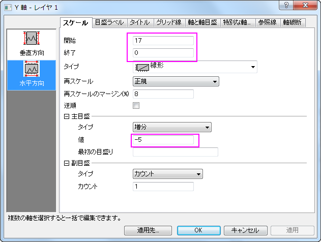
- 左側パネルの垂直アイコンをクリックし、X 軸のグリッド線タブを開き、副グリッド線ブランチの中にある表示チェックボックスを外します。「適用」ボタンをクリックします。
- 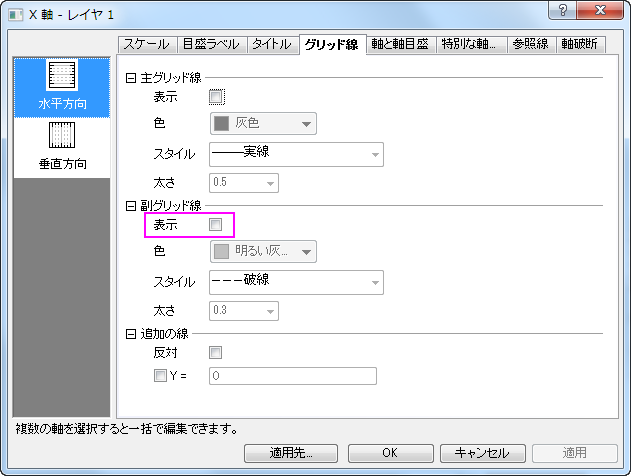
- 軸と軸目盛タブへ移動し、副目盛ブランチにあるスタイルをなしにします。
- 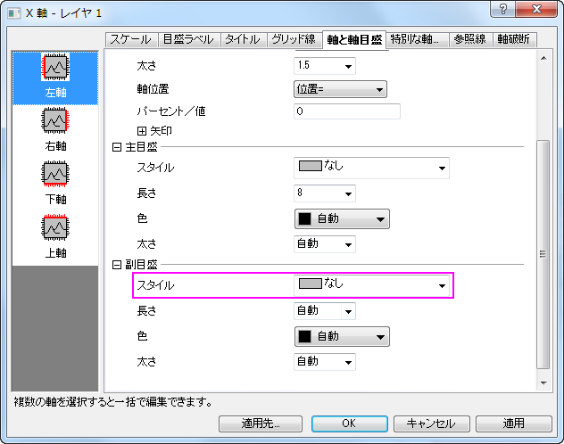
- それでは、全てのグラフについて副グリッド線と副目盛をなしにします。適用先ボタンをクリックすると適用先ダイアログが表示されます。そのダイアログで目盛とグリッド線の隣にあるチェックボックスを選択します。どちらのドロップダウンメニューでも、フォルダ内の全てのウィンドウを選択してOKをクリックします。プロジェクトエクスプローラの同じフォルダ内にある全てのグラフウィンドウの副グリッド線と軸目盛は非表示になりました。
- 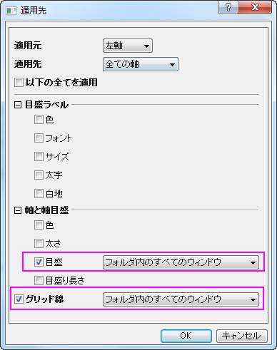
- 次に、Graph2(female-2010)とGraph3(male-2050)のY軸を編集します。軸ダイアログを開き、それぞれのグラフの軸スケールを次の画像の通りに設定します。
- 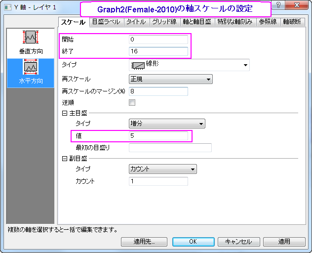
- 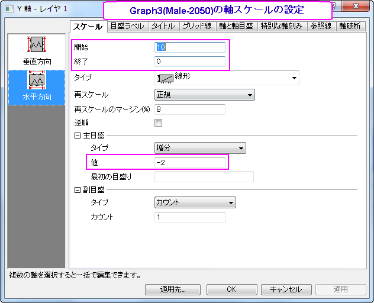
- Graph4 のX軸をダブルクリックして軸ダイアログを開き、X軸のスケールを以下のように設定します。
- 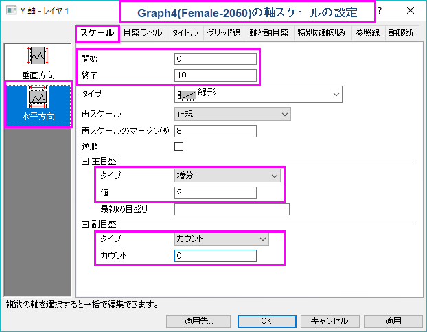
- Graph4（Female-2050）もY軸のスケールを開始０、終了10に設定します。Graph3(male-2050) の棒グラフ上でダブルクリックし、作図の詳細ダイアログを開きます。Layer1 の三角形を選択してその中のサブノードを選択し、右側パネルにあるパターンタブの塗りつぶしを青に設定します。
- Graph2(female-2010) と Graph4 (female-2050)では、X軸(垂直軸)の軸ラベルをクリックしてからDeleteキーを押してそれらを削除します。同じように、XとY軸の両方で軸タイトルも削除します。これで、次の画像のような4つのグラフの準備ができました。
- 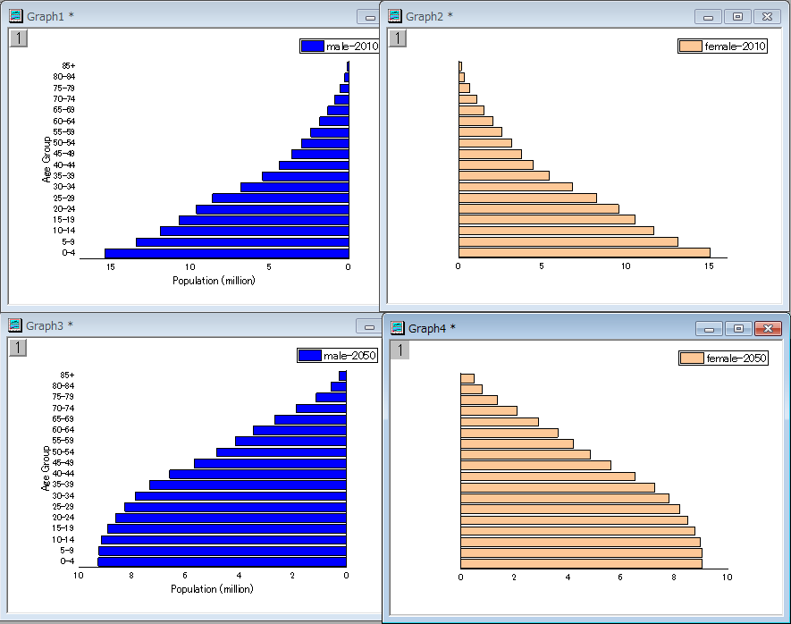
複数グラフを統合する
これで4つの異なる横棒グラフを作成できました。これら4つのグラフを統合して、最後の編集、例えばテキストでデータラベルを追加します。
- 1つのグラフウィンドウをアクティブにし、メインメニューからグラフ操作：グラフウィンドウの統合を選択します。これによりmerge_graphダイアログボックスを開きます。下図のように設定を変更し、これら4つの横棒グラフを1つのグラフウィンドウに表示します。
- 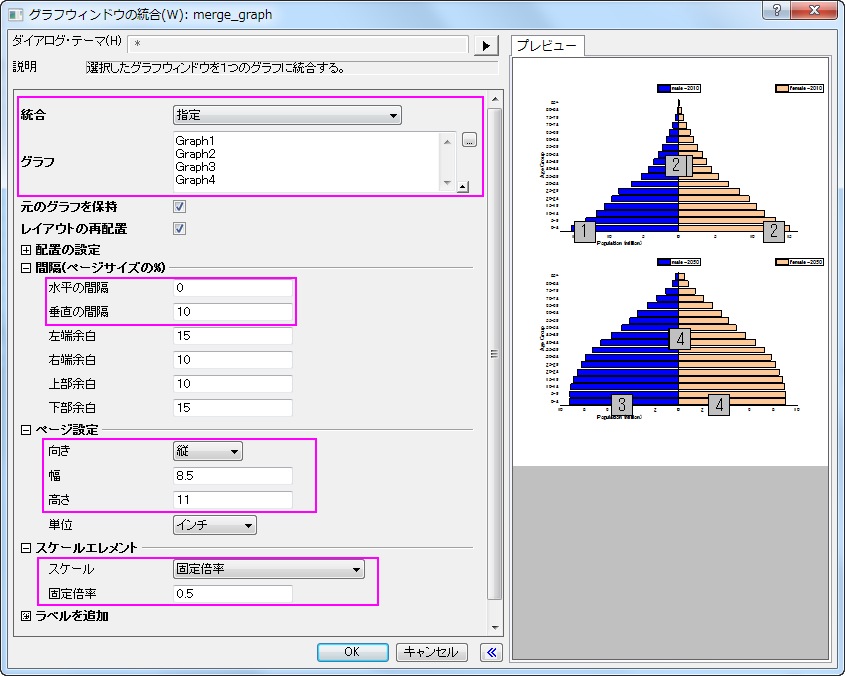
- 統合したグラフで、2つのY(水平)軸タイトルである "Population (million)"をドラッグして中央に揃えます。順番にグラフの凡例を削除します。
- グラフレイヤの空いている場所をクリックして「テキストの追加」を選択します。 次の4つのテキストラベルを作成します。使用するテキストラベルは次の通りです。
- Figure 1.African population by five – year age groups and sex, 2010 versus 2050
- 2010
- Males
N=515,267
- Females
N=517,776
- 2050
- Males
N=998,354
- Females
N=1,000,112
- Source: Population Division of the Department of Economic and Social Affairs of the United Nations Secretariat,
World Population Prospects: The 2008 Revision, http://www.un.org/en/index.html, Monday, April 12, 2010; 3:19:17 PM.
さらに、追加したテキストの位置、フォント、サイズ、色、文字揃えを編集しましょう。最終的に次のような画像のグラフが作成されます。